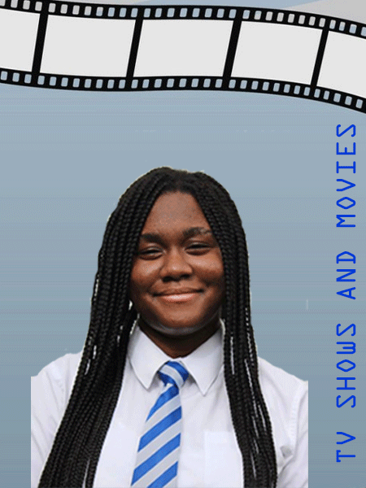

Hi, my name is Rosanne Kumapley. I was born in Chicago but was raised in Accra, Ghana till I came to Syracuse for university. I am majoring in Information Management and Technology with a concentration in data analytics because I like analyzing data. I am also doing a minor in finance.
I have beginner - intermediate skills in Python, R, Javascript and SQL. I think I am also pretty decent with excel.
Outside of class and work, I like to watch TV and Movies. Some of my favourite TV shows are Arrested Development, Prison Break, Succession and Dexter